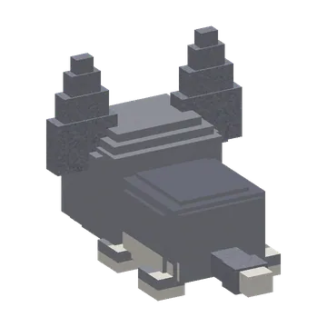
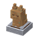
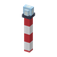
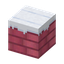
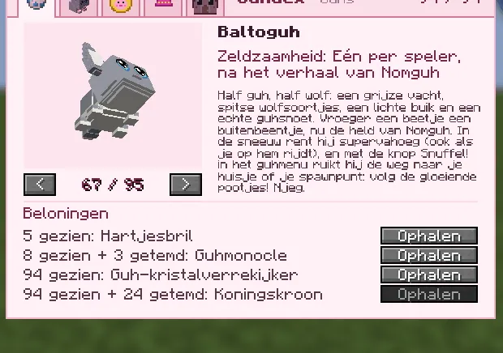
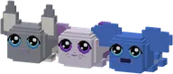

Half guh, half wolf: een grijze vacht, spitse wolfsoortjes, een lichte buik en een echte guhsnoet. Vroeger een beetje een buitenbeentje, nu de held van Nomguh. In de sneeuw rent hij supervahoeg (ook als je op hem rijdt), en met de knop Snuffel! in het guhmenu ruikt hij de weg naar je huisje of je spawnpunt: volg de gloeiende pootjes! Njeg.
The characters of NomguhDe personages van Nomguh
Baltoguh
Half guh, half wolf: grey fur, pointy wolf ears, a bushy tail and a real guh snoet. A bit of an outsider.Half guh, half wolf: grijze vacht, spitse wolfsoortjes, een pluimstaart en een echte guhsnoet. Een beetje een buitenbeentje.

Your BaltoguhJouw Baltoguh
- Fast in the snow: on snow, snowy grass, ice and sled tracks he runs 45% faster (and faster still when you ride him), with little snow puffs.Snel in de sneeuw: op sneeuw, besneeuwd gras, ijs en sledesporen rent hij 45% sneller (en nog sneller als je op hem rijdt), met sneeuwwolkjes.
- Snuffel! (guh menu): nose to the ground, he sniffs the way to his own huisje, or else your last huisje, or else your spawn point. A trail of glowing paw prints shows the way, and he tells you: nog 212 blokjes naar het noordoosten.Snuffel! (guhmenu): neus naar de grond, hij ruikt de weg naar zijn eigen huisje, anders je laatste huisje, anders je spawnpunt. Een spoor van gloeiende pootafdrukjes wijst de weg, en hij zegt: nog 212 blokjes naar het noordoosten.
The Baltoguh-beeldje is a bronze Baltoguh on a snowy pedestal for at home: click it for the quote and a tiny howl. Auuuhoe-njeg!
Het Baltoguh-beeldje is een bronzen Baltoguh op een besneeuwde sokkel voor thuis: klik erop voor de quote en een klein gehuil. Auuuhoe-njeg!



The GuhdexDe Guhdex

Baltoguh
See alsoZie ook
 Baltoguh and NomguhBaltoguh en NomguhStoriesVerhalen
Baltoguh and NomguhBaltoguh en NomguhStoriesVerhalen Taming, riding and picking upTemmen, rijden en oppakkenMechanicsSystemen
Taming, riding and picking upTemmen, rijden en oppakkenMechanicsSystemen
Story guhsVerhaalguhsMechanicsSystemen